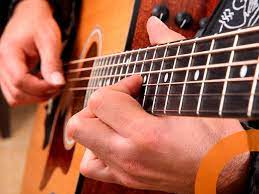
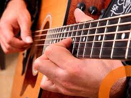

Hola, soy Jose Gomez Chamorro y soy un profesional en el campo de [tu profesión]. En mi tiempo libre, disfruto de una variedad de actividades, incluyendo videojuegos, ir al gimnasio, tocar la guitarra y leer libros de finanzas personales. Los videojuegos me ayudan a relajarme y a despejar la mente después de un largo día de trabajo. También disfruto del desafío de superar niveles difíciles y de aprender nuevas habilidades. Ir al gimnasio me ayuda a mantenerme en forma y saludable. Me gusta la sensación de bienestar que viene después de un buen entrenamiento. Tocar la guitarra es un pasatiempo que disfruto desde hace muchos años. Me relaja y me ayuda a expresar mi creatividad. Leer libros de finanzas personales me ayuda a aprender sobre cómo administrar mi dinero de manera efectiva. Me interesa aprender sobre cómo ahorrar, invertir y alcanzar mis metas financieras. Estos son solo algunos de mis hobbies. Creo que es importante tener intereses fuera del trabajo que me ayuden a relajarme, a aprender y a crecer como persona.
First slide label
Some representative placeholder content for the first slide.
Second slide label
Some representative placeholder content for the second slide.
Third slide label
Some representative placeholder content for the third slide.